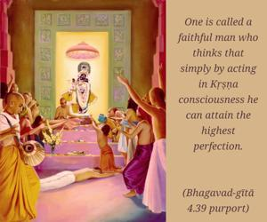
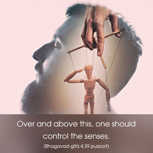

A faithful man who is dedicated to transcendental knowledge and who subdues his senses is eligible to achieve such knowledge, and having achieved it he quickly attains the supreme spiritual peace.


Such knowledge in Kṛṣṇa consciousness can be achieved by a faithful person who believes firmly in Kṛṣṇa. One is called a faithful man who thinks that simply by acting in Kṛṣṇa consciousness he can attain the highest perfection. This faith is attained by the discharge of devotional service and by chanting Hare Kṛṣṇa, Hare Kṛṣṇa, Kṛṣṇa Kṛṣṇa, Hare Hare/ Hare Rāma, Hare Rāma, Rāma Rāma, Hare Hare, which cleanses one’s heart of all material dirt. Over and above this, one should control the senses. A person who is faithful to Kṛṣṇa and who controls the senses can easily attain perfection in the knowledge of Kṛṣṇa consciousness without delay.